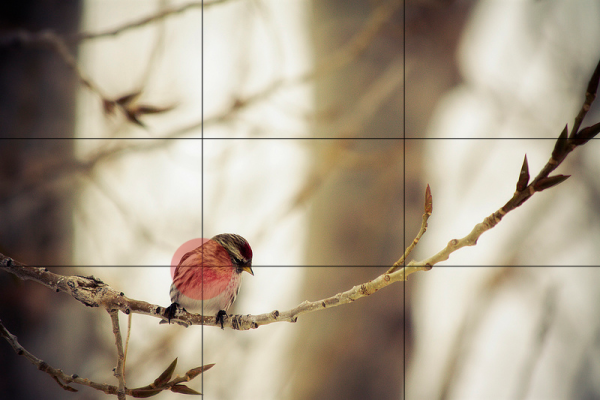

Curso de fotografía
Es triste invertir un dinero en una buena cámara réflex y no poder conseguir más que fotos fracasadas, feas y desastrosas, una tras otra, debido a ingenuos descuidos sobre reglas básicas de a fotografía, reglas que todo fotógrafo, por muy principiante que sea, debería conocer. Hoy te traigo una serie de consejos y reglas básicas de fotografía con las que podrás tomar fotos correctas de esas que satisfacen el ojo A partir de ahí, hacer que sean espectaculares dependerá sólo de ti. Por lo menos las reglas estarán de tu lado.
1) La Regla de los Tercios
Esta regla es muy simple pero tiene un tremendo poder en la forma en que visualizamos la foto. Consiste en dividir la imagen, mentalmente, en 9 partes iguales (mediante 2 líneas paralelas horizontales y otras 2 verticales) y a continuación colocar el sujeto en algún punto de intersección de las líneas. Esta foto lo ilustra perfectamente:
Como puedes ver, el fotógrafo ha colocado al pájaro en el punto de intersección de la parte inferior izquierda del encuadre. Cualquier otro punto de intersección nos hubiera valido igualmente. Esto en fotografía se llama puntos fuertes. Son puntos que atraen especialmente la atención y le otorgan al sujeto mayor interés y protagonismo.
2) La Ley del Horizonte
Útil a la hora de fotografiar paisajes. Cuando estés componiendo una foto, antes de disparar imagina 2 líneas horizontales paralelas dividiendo la foto en 3 partes iguales. Esto es aplicable en ambos modos horizontal o vertical.
3) Explorar nuevos ángulos
Experimenta la fotografía disparando con tu cámara desde ángulos atrevidos y poco usuales. Por ejemplo hazte una foto a ti mismo en el retrovisor del coche (sólo cuando no seas tú el conductor, por favor) o captura la imagen de algún edificio histórico reflejada en un charco de agua.